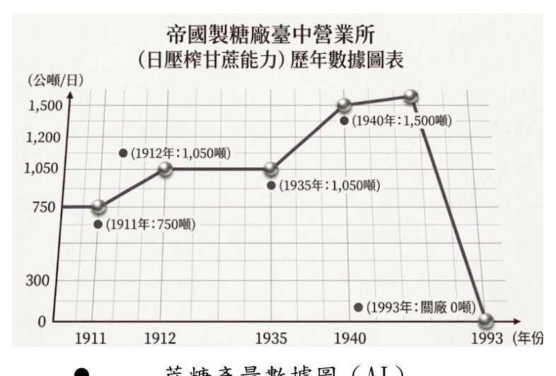

一、歷史沿革
帝國製糖臺中營業所前身為日治時期「帝國製糖株式會社臺中營業所」，全盛期產糖量曾達每日一千零五十噸。
- 1960 年代後：糖品改以進口為主，逐漸停工關廠
- 2007 年：登錄為臺中市歷史建築
- 2019 年底：委託民間營運，重新對外開放

二、產能數據

三、為什麼選這裡
帝國製糖廠的問題不是缺乏活動，而是大眾對它的印象停在「歷史古蹟」，平日缺少到訪動機。我們希望影片把它重新介紹成市區中的休閒放鬆場所。

四、位置地圖
帝國製糖廠位於臺中市東區，地址為樂業路 30 號。